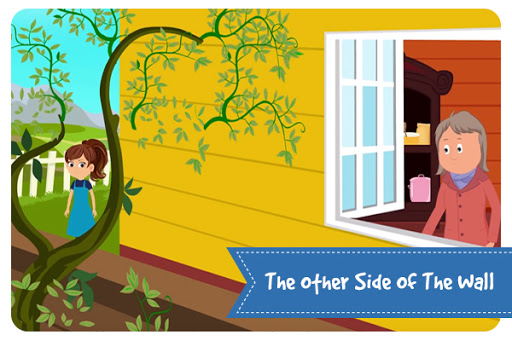

A young woman inherited a beautiful garden from her grandmother. She loved gardening too and was very proud of her garden. One day, she saw a very beautiful plant in a catalog and wanted that for her garden. She ordered it and planted it at the base of the stonewall in her backyard.
She took great care of the plant, which grew quickly and had beautiful green leaves on it.
Months passed, but not a single flower bloomed on the tree. Vexed, she almost wanted to cut the tree down. At such a time, her invalid called and said, “Thank you so much for the beautiful flowers. You have no idea how much I enjoy looking at the blooms of the vine you have planted”.
Hearing this, the young girl rushes to the neighbor’s side of the wall and sees the most beautiful flower in bloom.
All the care she took had paid off. Only the vine crept through the crevices because of which it did not flower on her side of the wall but did generously on the other side.